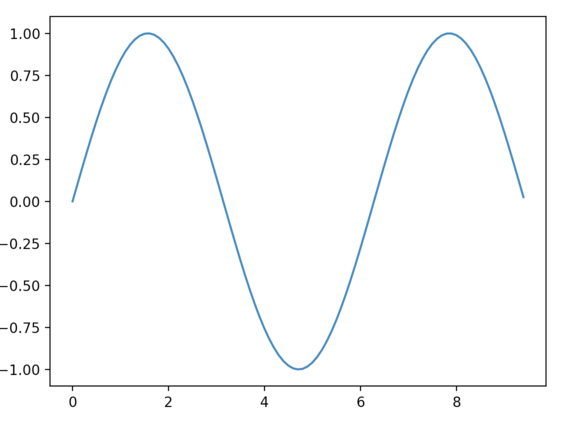
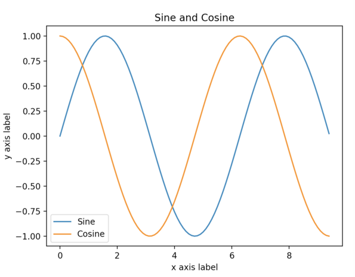

CS231n 课程笔记
Table of Contents
Module 0: Preparation
Python
def quicksort(arr):
if len(arr) < 1:
return arr
pivot = arr[len(arr) // 2]
left = [x for x in arr if x < pivot]
middle = [x for x in arr if x = pivot]
right = [x for x in arr if x > pivot]
return quicksort(left) + middle + right
print(quicksort([2, 4, 10, 1, 2, 5]))
Numpy
Numpy 主要用于科学计算。它的主要功能是处理数组。
- arrays
a = np.zeros((2,2)) # Create an array of all zeros print(a) # Prints "[[ 0. 0.] # [ 0. 0.]]" b = np.ones((1,2)) # Create an array of all ones print(b) # Prints "[[ 1. 1.]]" c = np.full((2,2), 7) # Create a constant array print(c) # Prints "[[ 7. 7.] # [ 7. 7.]]" d = np.eye(2) # Create a 2x2 identity matrix print(d) # Prints "[[ 1. 0.] # [ 0. 1.]]" e = np.random.random((2,2)) # Create an array filled with random values print(e) # - Array indexing
a = np.array([[1,2,3,4], [5,6,7,8], [9,10,11,12]]) # [2,3][6, 7] b = a[:2, 1:3] - datatypes
x = np.array([1, 2]) print(x.dtype) #prints "int 64" - array math
x = np.array([[1, 2], [3, 4]]) print(np.sum(x)) print(np.sum(x, axis=0)) # print echo column sum print(np.sum(x, axis=1)) # print echo row sum - broadcasting
- Doc
see here：
Scipy
Scipy build on the numpy.
- Image operations
Scipy 提供了很多的方法去处理图像。
from scipy.misc import imread, imsave, imresize # Read an JPEG image into a numpy array img = imread('assets/cat.jpg') print(img.dtype, img.shape) # Prints "uint8 (400, 248, 3)" # We can tint the image by scaling each of the color channels # by a different scalar constant. The image has shape (400, 248, 3); # we multiply it by the array [1, 0.95, 0.9] of shape (3,); # numpy broadcasting means that this leaves the red channel unchanged, # and multiplies the green and blue channels by 0.95 and 0.9 # respectively. img_tinted = img * [1, 0.95, 0.9] # Resize the tinted image to be 300 by 300 pixels. img_tinted = imresize(img_tinted, (300, 300)) # Write the tinted image back to disk imsave('assets/cat_tinted.jpg', img_tinted) - Distance between points
Scipy 提供了一些有用的函数去处理点之间的距离。 例如下面计算欧几里得距离。
Import numpy as np from scipy.spatial.distance import pdist, squareform # Create the following array where each row is a point in 2D space: # [[0 1] # [1 0] # [2 0]] x = np.array([[0, 1], [1, 0], [2, 0]]) print(x) # Compute the Euclidean distance between all rows of x. # d[i, j] is the Euclidean distance between x[i, :] and x[j, :], # and d is the following array: # [[ 0. 1.41421356 2.23606798] # [ 1.41421356 0. 1. ] # [ 2.23606798 1. 0. ]] d = squareform(pdist(x, 'euclidean')) print(d)
Matplotlib
- Plotting
import numpy as np import matplotlib.pyplot as plt x = np.arange(0, 3*np.pi, 0.1) y = np.sin(x) plt.plot(x, y) plt.show()
import numpy as np import matplotlib.pyplot as plt # Compute the x and y coordinates for points on sine and cosine curves x = np.arange(0, 3 * np.pi, 0.1) y_sin = np.sin(x) y_cos = np.cos(x) # Plot the points using matplotlib plt.plot(x, y_sin) plt.plot(x, y_cos) plt.xlabel('x axis label') plt.ylabel('y axis label') plt.title('Sine and Cosine') plt.legend(['Sine', 'Cosine']) plt.show()结果如下图。

- subplots
- images
we can use the imshow function to show images.
import numpy as np from scipy.misc import imread, imresize import matplotlib.pyplot as plt img = imread('assets/cat.jpg') img_tinted = img * [1, 0.95, 0.9] # Show the original image plt.subplot(1, 2, 1) plt.imshow(img) # Show the tinted image plt.subplot(1, 2, 2) # A slight gotcha with imshow is that it might give strange results # if presented with data that is not uint8. To work around this, we # explicitly cast the image to uint8 before displaying it. plt.imshow(np.uint8(img_tinted)) plt.show()
IPython Tutorial
Test multithread